Ihre Zahlungen im Rhythmus Ihres Kalenders.
Planen Sie Rechnungen und Abonnements, setzen Sie Erinnerungen und behalten Sie eine klare Monatsübersicht. Ihre Daten bleiben auf dem Gerät.
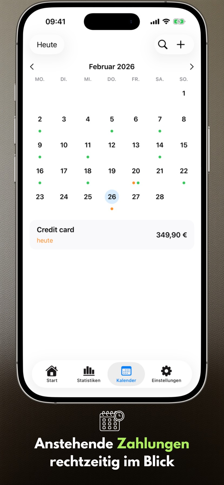
Neu in Version 2.3.1
- Widgets arbeiten zuverlässiger.
- Die Zahlungsliste wird auf dem Mac korrekt angezeigt.
App-Screens
Sechs zentrale Screens auf iPhone und iPad, die den Planungsrhythmus mit Payment Calendar zeigen.
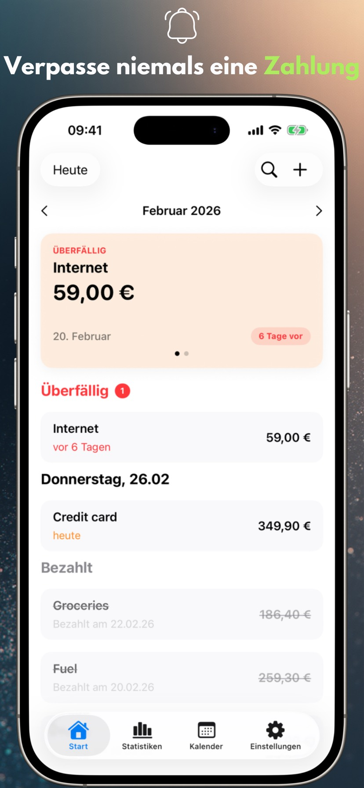
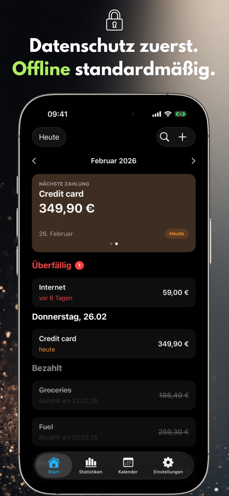
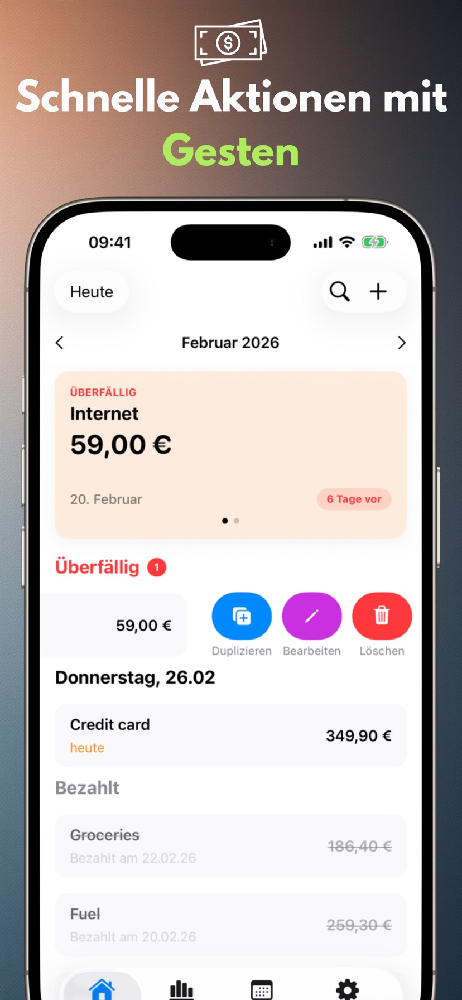
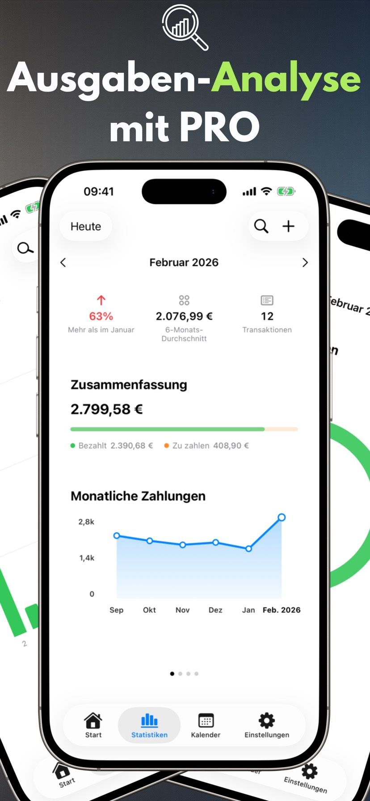
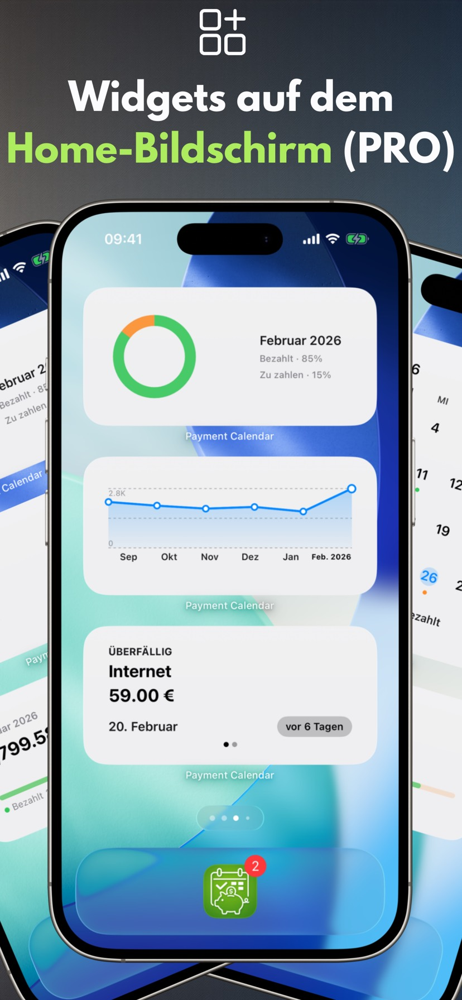
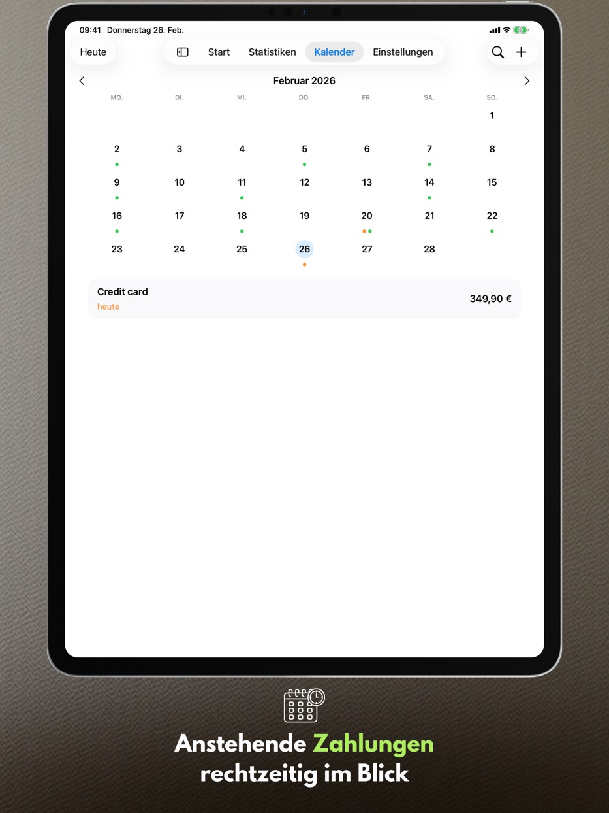
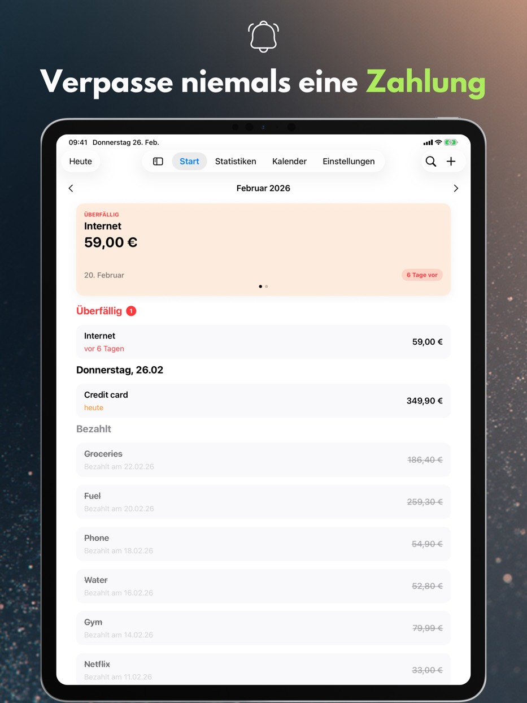
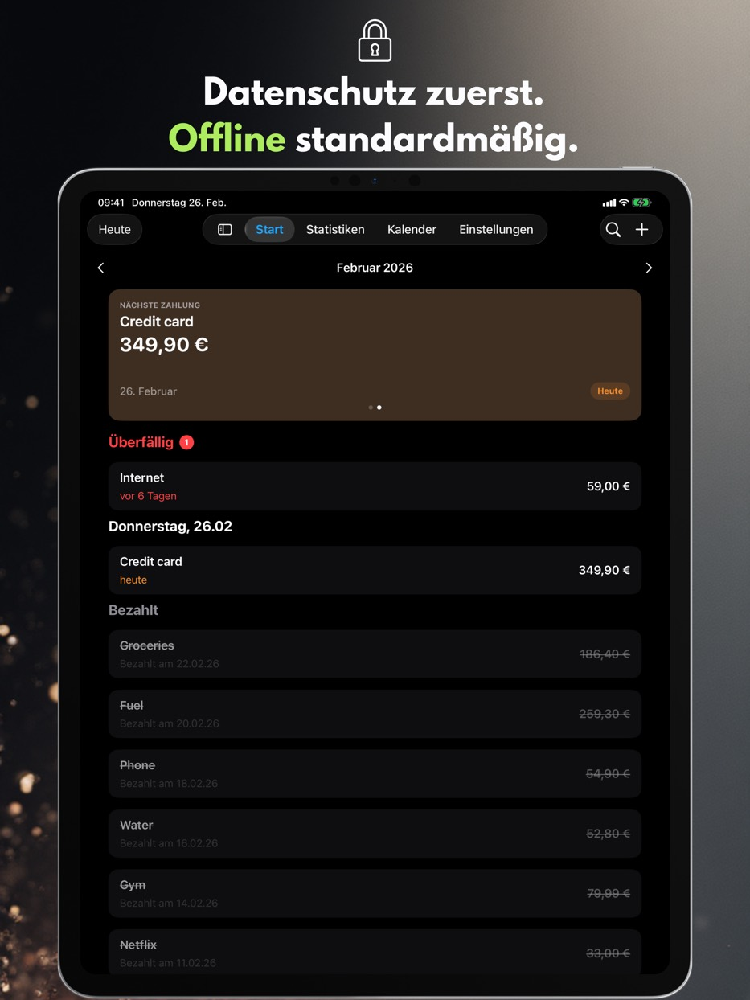
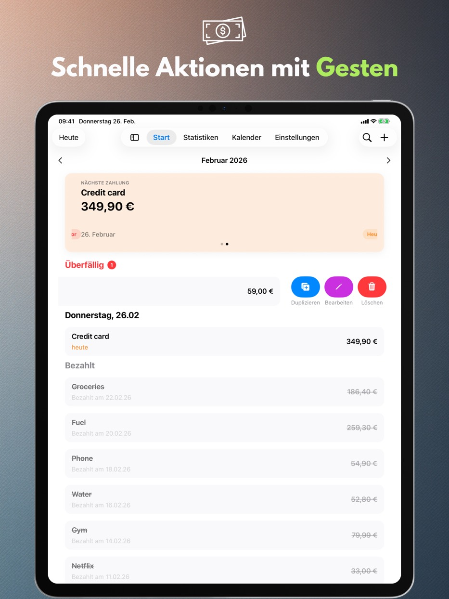
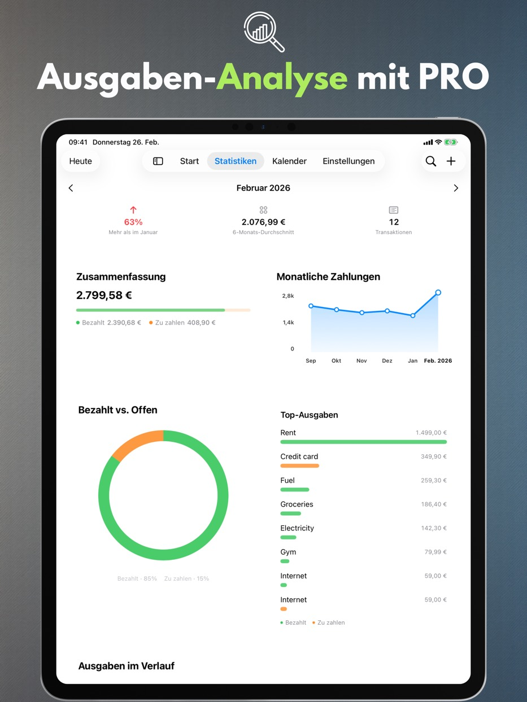
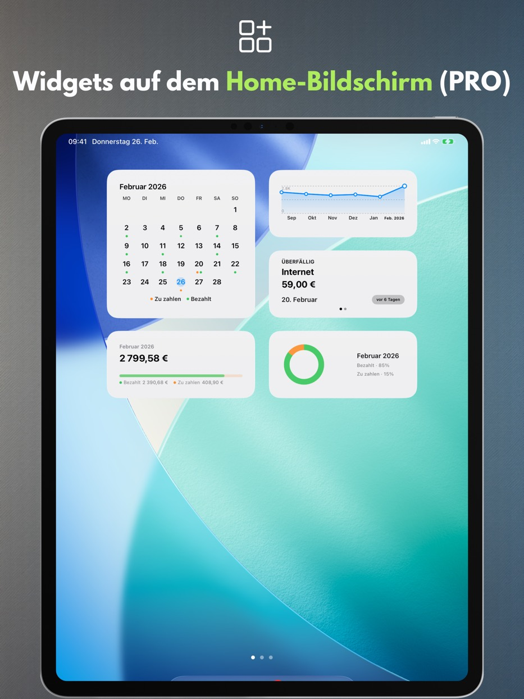
App-Funktionen
Alles Folgende funktioniert kostenlos und ohne Konto: eine klare Monatsansicht, schnelles Erfassen von Zahlungen und Erinnerungen, mit denen sich Ausgaben in Ruhe planen lassen.
Zahlungskalender
Sehen Sie anstehende Fälligkeitstermine und Ihre Zahlungsliste an einem Ort.
Erinnerungen
Lassen Sie sich am Fälligkeitstag oder einige Tage früher benachrichtigen.
Gesten und schnelle Aktionen
Als bezahlt markieren, bearbeiten oder mit einem Wisch duplizieren.
Suche
Finden Sie Zahlungen nach Name, Betrag oder Notizen.
Persönliche Einstellungen
Währung, Wochenstart, Design und ein Layout, das zu Ihnen passt.
iPad-Unterstützung
Fenstermodus und Split View, dazu Tastatur und Tastaturkurzbefehle.
Papierkorb
Gelöschte Zahlungen bleiben 30 Tage im Papierkorb — du kannst sie wiederherstellen.
Bedienungshilfen
Die App folgt der Textgröße des Systems, respektiert „Bewegung reduzieren“ und zeigt den Zahlungsstatus nie allein über die Farbe.
Privatsphäre
Ihre Daten bleiben auf dem Gerät.
Payment Calendar benötigt kein Konto und verfolgt Ihre Aktivitäten nicht. iCloud-Synchronisierung ist optional und standardmäßig deaktiviert.
Keine Werbung, keine Analyse
Wir verwenden keine Drittanbieter-SDKs für Analyse oder Werbung.
Datenkontrolle
Löschen Sie Ihre Daten jederzeit in der App oder durch Entfernen.
PRO-Funktionen
Eine kostenpflichtige Erweiterung: Statistiken, Widgets, wiederkehrende Zahlungen, Synchronisierung und Export. Zur Wahl stehen ein Monats- oder Jahresabo und ein einmaliger Lifetime-Kauf.
Statistiken und Trends
Monatliche Zusammenfassungen plus 6-Monats-Trendansicht.
Widgets
Vier Home-Bildschirm-Widgets: nächste Zahlung, Monatsübersicht, Trend und Monatsraster.
Wiederkehrende Zahlungen
Erstellen Sie automatisch wiederkehrende Zahlungen.
iCloud-Synchronisierung
Halten Sie Daten auf Ihren Geräten synchron, wenn aktiviert.
CSV/PDF-Export
Teilen Sie Zusammenfassungen oder archivieren Sie Ihre Daten.
Verfügbare Sprachen
Payment Calendar unterstützt Polnisch, Englisch, Spanisch, Deutsch, Französisch, Italienisch, Ukrainisch, Schwedisch, vereinfachtes Chinesisch, Japanisch und Portugiesisch (Brasilien).
Häufige Fragen (FAQ)
Hier finden Sie kurze Antworten auf die häufigsten Fragen zu Payment Calendar.
Bevor Sie starten
Wie vergesse ich keine Rechnung mehr?
Payment Calendar zeigt alle anstehenden Zahlungen in der Monatsansicht und sendet Erinnerungen vor dem Fälligkeitstermin — so sehen Sie rechtzeitig, was und wann bezahlt werden muss.
Wie behalte ich Abonnements im Blick, ohne für Unnötiges zu bezahlen?
Fügen Sie Abonnements als wiederkehrende Zahlungen hinzu (PRO-Funktion) — die App erinnert Sie automatisch an jede Verlängerung, sodass Sie leichter erkennen und kündigen, was Sie nicht mehr nutzen.
Gibt es eine App wie einen Kalender, aber für Rechnungen und Zahlungen?
Ja, genau das ist die Idee von Payment Calendar — die Monatsansicht zeigt Zahlungen statt Termine, mit klarer Kennzeichnung, was bezahlt ist und was noch aussteht.
Wie verwalte ich Zahlungen, ohne ein Konto anzulegen?
Payment Calendar erfordert keine Registrierung oder Anmeldung — Sie installieren die App und tragen sofort Zahlungen ein. Die Daten bleiben lokal auf dem Gerät, es sei denn, Sie aktivieren selbst die optionale iCloud-Synchronisierung.
Was unterscheidet Payment Calendar von einem normalen Kalender auf dem Handy?
Ein Standardkalender zeigt Termine, keine Zahlungen — es fehlt der Status „bezahlt / offen", passende Erinnerungen für Rechnungen und ein Überblick über Ihre Ausgaben. Payment Calendar ist gezielt für Zahlungen konzipiert: mit Beträgen, Währungen, Wiederholungen und Statistiken darüber, wie viel Sie tatsächlich im Monat ausgeben.
Grundlagen
Was ist die App Payment Calendar?
Payment Calendar ist eine App für iPhone und iPad (iOS/iPadOS), mit der Sie Rechnungen und anstehende Zahlungen im Kalenderformat verfolgen können. Sie sehen schnell, was fällig ist, und können Zahlungen als bezahlt markieren.
Funktioniert die App offline?
Ja. Die App funktioniert offline und benötigt weder ein Konto noch eine Internetverbindung. Die Daten werden lokal auf dem Gerät gespeichert. Die optionale iCloud-Synchronisierung (in der PRO-Version) ermöglicht den Zugriff auf mehreren Apple-Geräten.
Auf welchen Geräten läuft Payment Calendar?
Die App läuft auf iPhone und iPad mit iOS/iPadOS 18.0 oder neuer. Du kannst sie auch auf einem Mac mit Apple Silicon installieren — dort läuft sie als iPad-App („Designed for iPad“) und nicht als eigene macOS-Version.
Datenschutz und Daten
Sind meine Finanzdaten sicher?
Ja. Payment Calendar sammelt keine Nutzerdaten und erfordert keine Anmeldung. Ihre Daten bleiben auf Ihrem Gerät, und die optionale iCloud-Synchronisierung (in der PRO-Version) erfolgt innerhalb des Apple-Ökosystems.
Verbindet sich Payment Calendar mit meinem Bankkonto?
Nein. Payment Calendar verbindet sich nicht mit Ihrer Bank und ruft keine Transaktionen automatisch ab — Sie tragen Zahlungen manuell ein. Das ist eine bewusste Entscheidung: Die App setzt von Anfang an auf Privatsphäre und benötigt keinen Zugriff auf Ihr Bankkonto, um zu funktionieren.
Funktionen
Kann ich wiederkehrende Zahlungen und Abonnements hinzufügen?
Ja. Sie können wiederkehrende Zahlungen wie Abonnements und monatliche Rechnungen hinzufügen. Diese Funktion ist in der PRO-Version verfügbar.
Sendet die App Erinnerungen an bevorstehende Zahlungen?
Ja. Sie können Erinnerungen einstellen, damit Sie keine Zahlung verpassen.
Welche Währungen unterstützt Payment Calendar?
Die App unterstützt 22 Währungen, darunter US-Dollar, Euro, Pfund, Schweizer Franken, tschechische, schwedische, norwegische und dänische Kronen, Forint, Hrywnja, Yen, Yuan, Real sowie kolumbianischer Peso, mongolischer Tögrög, mexikanischer Peso, chilenischer Peso und neuseeländischer Dollar. Die Formatierung (Symbole, Trennzeichen, Rundung) richtet sich automatisch nach der Region deines Geräts.
Kann ich meine Zahlungen exportieren?
Ja, in der PRO-Version. Sie können Ihre Daten als CSV- oder PDF-Datei exportieren, zum Beispiel für einen Bericht oder zur Archivierung.
Kann ich das tatsächliche Zahlungsdatum nachträglich korrigieren?
Ja. Das Bearbeitungsformular für eine bezahlte Zahlung enthält das Feld „Bezahlt am", in dem Sie das tatsächliche Zahlungsdatum eintragen können. Die Statistiken gruppieren Zahlungen weiterhin nach Fälligkeitstermin, nicht nach Zahlungsdatum.
Gibt es ein Widget für den Home-Bildschirm?
Ja, in der PRO-Version. Es stehen vier Home-Bildschirm-Widgets zur Wahl: nächste Zahlung, Monatsübersicht, Ausgabentrend und Monatsraster — alle ohne die App zu öffnen.
Ich habe eine Zahlung versehentlich gelöscht — bekomme ich sie zurück?
Ja. Gelöschte Zahlungen landen im Papierkorb und bleiben dort 30 Tage. Den Papierkorb findest du in den Einstellungen, und das Wiederherstellen kostet einen Tipp.
Ist Payment Calendar eine App zur Haushaltsbudgetverwaltung?
Nein. Es ist ein Rechnungskalender, der Ihnen hilft, anstehende und bezahlte Zahlungen zu verfolgen. Einkommen, Kontostände oder Budgetplanung werden nicht verwaltet.
Synchronisation und Sprachen
Werden meine Daten zwischen iPhone und iPad synchronisiert?
Ja, wenn Sie die optionale iCloud-Synchronisierung aktivieren (PRO-Funktion) — dann sind Ihre Zahlungen auf allen Apple-Geräten verfügbar, die mit demselben iCloud-Konto angemeldet sind. Ohne diese Option bleiben die Daten lokal auf einem Gerät.
In welchen Sprachen ist die App verfügbar?
Payment Calendar ist in 11 Sprachen verfügbar: Polnisch, Englisch, Spanisch, Deutsch, Französisch, Italienisch, Ukrainisch, Schwedisch, vereinfachtem Chinesisch, Japanisch und Portugiesisch (Brasilien).
Plattformen
Gibt es Payment Calendar für Android?
Nein. Payment Calendar ist eine App für iPhone und iPad (iOS/iPadOS); auf Macs mit Apple Silicon läuft sie im Modus „Designed for iPad“. Eine Android-Version gibt es nicht.
Gibt es eine Version für die Apple Watch?
Noch nicht, aber die Unterstützung für watchOS ist für die Weiterentwicklung der App geplant.
Preis und PRO
Kann ich die App ohne kostenpflichtiges Abonnement nutzen?
Ja. Die Grundfunktionen sind kostenlos. PRO-Funktionen wie wiederkehrende Zahlungen und iCloud-Synchronisierung erfordern ein Abonnement oder einen Einmalkauf.
Was kostet die PRO-Version und kann ich das Abonnement kündigen?
Der Preis hängt von Ihrer Region ab und wird in der App sowie im App Store angezeigt. Zur Auswahl stehen ein monatliches, ein jährliches Abonnement oder ein einmaliger Lifetime-Kauf. Sie verwalten und kündigen Ihr Abonnement in den Apple-ID-Einstellungen, genau wie jedes andere Abonnement im App Store.
Support
Mir fehlt eine Währung oder ich habe eine Idee für eine neue Funktion — was kann ich tun?
Schreiben Sie mir an payment_calendar@icloud.com. Ich lese und beantworte jede E-Mail persönlich — Hinweise und Ideen von Nutzern fließen wirklich in kommende Versionen ein.
Bereit für ruhigere Zahlungsplanung?
Payment Calendar hält jeden Fälligkeitstermin im Blick.